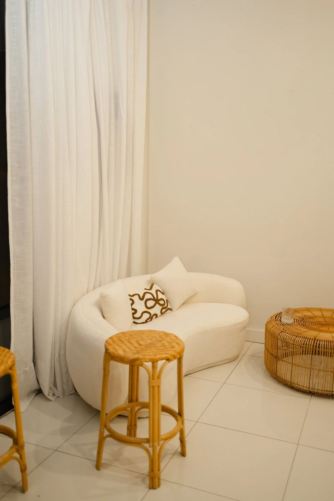

New at Hidden Beauté
IPL in Busselton for sun damage, pigmentation and uneven tone
Years of South West sunshine show up on our skin. IPL is one of the best-known ways to work on it, and it always starts with a proper look at your skin first.
Years of South West sunshine show up on our skin. IPL is one of the best-known ways to work on it, and it always starts with a proper look at your skin first.
IPL stands for intense pulsed light. It sends gentle pulses of light into the skin, where they're drawn to pigment like sun spots and freckling, and to redness.
Over the following week or so, treated pigment usually darkens a little and then lifts away as your skin renews. Most skin needs a short course of treatments for the best result, and your therapist maps that out with you at your consultation.
We look at your skin, your history, any medications and your goals. If IPL isn't right for you, we'll tell you and show you what is.
A small test area to see how your skin responds, plus simple prep steps (mainly: no tanning).
Cooling gel, protective eyewear, then a series of quick light pulses. Most people describe a warm flick, like a rubber band snap. Full face usually takes around 30 minutes.
Skin can look a little pink, and pigment may look darker for a few days before it lifts. SPF every day and we'll send your aftercare straight to your phone.
Most people book a short course a few weeks apart. Your plan, your reminders and your rebooking are all sorted before you leave.

If you've just come back from a week in the sun, we'll wait. If you're pregnant, we'll wait. If your skin's sensitised from something else, we'll fix that first.
IPL is brilliant on the right skin, at the right time. My job is to make sure that's you before we start. That's why every IPL here begins with a consultation.
Rachael x
| If you mostly see... | We might look at... |
|---|---|
| Sun spots, pigmentation, uneven tone | IPL, often paired with LED |
| Fine lines, texture, scarring | Collagen Boosting Therapy (Dermapen 4 + Dermalux LED) |
| Pigmentation plus rough texture | Herbal Resurfacing Facial or a combined plan |
| Not sure | Start with a skin consultation |
To celebrate IPL arriving at Hidden Beauté, our launch clients get the neck and chest included at no extra cost. It's a limited number of spots, and every launch booking includes your skin consultation first.
Suitability confirmed at consultation. Results vary from person to person.

Right here at Hidden Beauté Studio, 2C 33-46 Albert Street, Busselton. Clients also come to us from Dunsborough, Vasse and Margaret River.
Most people describe it as a warm flick, like a rubber band snap. It's quick, and we check in with you the whole way through.
It depends on your skin and what you're targeting. Most people do a short course a few weeks apart. We'll map it out at your consultation, so there are no surprises.
Usually very little. Skin can be pink for a few hours, and pigment may look darker for a few days before it lifts. Most people go straight back to their day.
IPL uses light to target pigment and redness. Skin needling (our Collagen Boosting Therapy) works on collagen, texture and fine lines. Lots of skin plans use both at different times of year.
IPL isn't done on freshly tanned skin, during pregnancy, or with some medications and skin conditions. Some skin tones need extra care. That's exactly what your consultation is for.
Cooler months are ideal because there's less sun exposure, but with the right SPF habits we can treat year-round. We'll plan around your summer.
Start with a skin consultation and we'll tell you honestly what your skin needs.